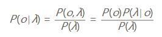

分词算法综述
分词现状
NLP的底层任务由易到难大致可以分为词法分析、句法分析和语义分析。分词是词法分析（还包括词性标注和命名实体识别）中最基本的任务，可以说既简单又复杂。说简单是因为分词的算法研究已经很成熟了，大部分的准确率都可以达到95%以上，说复杂是因为剩下的5%很难有突破，主要因为三点：
- 粒度，不同应用对粒度的要求不一样，比如“苹果手机”可以是一个词也可以是两个词。
- 歧义，比如“下雨天留人天留我不留”。
- 未登录词，比如“skrrr”、“打call”等新兴词语。
分词算法根据其核心思想主要分为两种，第一种是基于字典的分词，先把句子按照字典切分成词，再寻找词的最佳组合方式；第二种是基于字的分词，即由字构词，先把句子分成一个个字，再将字组合成词，寻找最优的切分策略，同时也可以转化成序列标注问题。归根结底，上述两种方法都可以归结为在图或者概率图上寻找最短路径的问题。
- 未登录词，比如“skrrr”、“打call”等新兴词语。
基于词典的分词
最大匹配分词算法
最大匹配分词寻找最优组合的方式是将匹配到的最长词组合在一起。主要的思路是先将词典构造成一棵Trie树，也称为字典树。
Trie树由词的公共前缀构成节点，降低存储空间同时提升查找效率。最大匹配分词将句子与Trie树进行匹配，在匹配到根节点后由下一个字重新开始查找。最大匹配又分为前向匹配和后向匹配算法，如上图中，对语句“他说的确实在理”，前向最大匹配的结果“他/说/的确/实在/理，而反向最大匹配结果”他/说/的/确实/在理“。通过词典最大匹配时间效率虽然高，但是效果很差，实际一般很少使用这种方法。
最短路径分词算法
最短路径分词算法首先将一句话中的所有词匹配出来（基于词典），构成词图（有向无环图DAG），然后寻找从起始点到终点的最短路径作为最佳组合方式。
图中所有词的权重都是相等的，所以每条边的权重都是1.
DAG图的最短路径问题，可以描述为 在无向图 $G=(V,E)$ 中，假设每条边 $E[i]$ 的长度为 $w[i]$，找到由顶点 V0 到其余各点的最短路径（单源最短路径）。假设源点为S，节点集合为V，终点为E。对于最短路径P(S,E)中的中间节点，其源点到其的最短路径也在P（SE）内。即：假如S->A->B->C->E是最短路径，那S->A->B一定是S到B的最短路径，否则，将会存在一点F，使得d(S->F->B)<d(S->A->B),而最短路径P1(S,E)=S->F->B->C->E将比P(S,E)短，从而与假设矛盾。因此，求解DAG可以利用最优子结构，通过贪心或者动态规划来求解。
Dijkstra算法
Dijkstra算法本质是贪心算法，每一步求解最短路径节点，然后递推更新源节点到其他节点的距离。
算法步骤：
- a.初始时，S只包含源点，即S＝{v}，v的距离为0。U包含除v外的其他顶点，即:U={其余顶点}，若v与U中顶点u有边，则<u,v>正常有权值，若u不是v的出边邻接点，则<u,v>权值为∞。
- b.从U中选取一个距离v最小的顶点k，把k，加入S中（该选定的距离就是v到k的最短路径长度）。
- c.以k为新考虑的中间点，修改U中各顶点的距离；若从源点v到顶点u的距离（经过顶点k）比原来距离（不经过顶点k）短，则修改顶点u的距离值，修改后的距离值的顶点k的距离加上边上的权。
- d.重复步骤b和c直到所有顶点都包含在S中。

Dijkstra算法的结果为”他/说/的/确实/在理“，可见最短路径分词可以解决大部分问题，但是当最短路径存在多条时，Dijkstra只保存一条，这种策略即缺乏理论依据也对其他路径不公平。
N-最短路径分词算法
N-最短路径分词是对Dijkstra算法的扩展，他在每一步都保存最短的N条路径（beam search），同时记录当前节点的前驱，最后求得最优解时回溯得到最短路径，该算法结果优于Dijkstra，但是时间与空间复杂度上更大。
基于n-gram model的分词算法
前文中边的权重都是1，但实际中不同的词出现的频率/概率不同，其成词的概率也就相应不同，因此将求解词图最短路径的问题转化为求解最大概率路径问题。即将句子切分为”最有可能的词的组合“。而计算词出现的概率，就需要语料对”语言“进行统计建模。
语言模型是对一句话出现的概率进行建模，根据条件概率：
p(他说的确实在理) = p(他)p(说|他)p(的|他说)…p(理|他说的确实在)
上述计算过于庞大，一般我们采用n-gram来近似，如2-gram。
然后我们将语言模型得到的概率分布应用到词图，可以得到词图的概率图 ：

利用上面两种求解DAG最短路径的方法进行求解即可。
基于字的分词
与基于词典的分词不同，基于字的分词事先不对句子进行词匹配，而是将分词看成是给句子中的每个字打上标签的序列标注问题，可以看成是对每个字的分类问题。 比如通过4标签来进行标注（single，单字成词；begin，多字词的开头；middle，三字以上词语的中间部分；end，多字词的结尾。均只取第一个字母。），这样，“为人民服务”就可以标注为“sbebe”了。 4标注不是唯一的标注方式，类似地还有6标注，理论上来说，标注越多会越精细，理论上来说效果也越好，但标注太多也可能存在样本不足的问题，一般常用的就是4标注和6标注。
HMM模型
HMM模型认为在解决序列标注问题时，存在两种序列，一种是观测序列，是人显性观察到的句子，而标签是隐状态序列，即观测状态为X，隐藏状态序列是Y，因果关系是Y->X.
我们用λ=λ1λ2…λn表示输入的句子，用o= o1o2…on表示对应的label，那最优的输出是什么呢？从概率的角度，我们希望下面的条件概率最大：
$max P(o∣λ)=max P(o1o2…on∣λ1λ2…λn)$
也就是，o有很多种可能，但是最优的是o应该是概率最大的o。而上式的概率是关于2n个变量的条件概率，而且不同的输入有不同的n，精确计算基本不太可能，所以，我们为了简化问题，先提出第一个假设：输出只与对应的输入有关。于是，上式就可以简化为：
$maxP(o∣λ)=max P(o1∣λ1)P(o2∣λ2)…P(on∣λn)$
现在，上式的求解就简单多了，只要让每个P(ok|λk)最大，即可得到最大的$P(o|λ)$.
上面的方案是一个简化方案，但是完全没有考虑上下文，这样会出现很多不合理的结果，比如按照我们4标注方法，b后只能接m或者e，而上述方案不考虑上下文，就可能出现bb\bs等错误结果。这些都是不合理的结果。而产生这种结果的原因是我们没有考虑label之间的关系，所以，我们需要换个角度，反过来考虑这个问题。
首先，利用贝叶斯公式：
由于λ是给定的输入，那么P(λ)就是常数，我们忽略他。现在，最大化P(o|λ)~P(o)P(λ|o).此时，我们的模型是考虑了输出之间的关系P(o),就可以避免一些不合理的情况的出现。
$P(o)P(λ|o)=P(o1o2…on)P(λ1λ2…λn|o1o2…on)$
根据我们第一个假设，我们得到：
$P(λ|o)=P(λ1|o1)P(λ2|o2)…P(λn|on)$
对于$P(o)$,有
$P(o) = P(o1)P(o2|o1)…P(on|o1o2..on-1)$
此时，我们提出第二个假设：输出状态只与前一个状态有关。
$P(o) = P(o1)P(o2|o1)…P(on|on-1)$
此时，
$P(o|λ)~P(λ1|o1)P(o2|o1)P(λ2|o2)P(o3|o2)…P(on|on-1)P(λn|on)$
其中，$P(λk|ok)$称为发射概率，$P(on|on-1)$称为转移概率。对于不合理的输出序列，如bb，我们可以通过设置其状态转移概率为0来避开。
接下来的HMM模型的训练，就是如何求解发射概率与转移概率了。
学习训练主要有极大似然估计和 Baum-Welch(前向后向)两种算法，通常用极大似然估计。如果有一批标注好的语料，这俩个概率的估计就非常简单了，但通常我们没有大批标注好的语料，我们可以通过词典和未标注的语料来估计，如果没有语料，我们可以通过词典来估计发射概率，状态转移概率人为给一个。
得到了发射概率和转移概率，此时就是计算给定输入的最大概率的输出序列。设输入序列长度为L, 状态（label)有n种，则有 $n^L$种可能的排列方式，此时计算最大概率的复杂度为$O(Ln^L)$，这个量太大了，不可取，于是，维特比算法登场了。
维特比算法
维特比算法是HMM，CRF中的经典解码算法，其核心是通过DP思想，在每个时间点的每个label上存储到该位置的最大概率，将计算复杂度降低为 $O(L^2n)$。其流程图如下:
算法流可能不够直观，下面来通过一个例子来更好的理解。
图中X是观察序列（输入序列），Y是标签矩阵。T1为每个时间点每个label的最大概率，

T2为到达该时间点该label最大概率的前驱label（上个时间点上）

到达最后一个时间点后，求解最大概率对应的label，然后通过T2回溯，将对应前驱节点加入path直到到达起始时间点，得到的path即为最优解的逆序，反转即可得到最优路径（最大概率的输出标签序列）。
CRF
CRF可以看作一个无向图模型，对于给定的标注序列Y和观测序列X，对条件概率P(Y|X)进行建模。首先，我们讨论一下有向图与无向图概率模型。
有向图
上图是一个广义的有向图，他们的联合概率数学表示为：
无向图
上图是一个广义的无向图，而求解时，需要将其分解为若干个“小团”的联合概率的乘积，而每个小团必须是“最大团”（子图里任意两个节点是相连的，且没有其他节点能加入使他成为跟大的团），则有：

其中
用来归一化，将结果转化为概率。
上图的无向图的联合概率表示为：
其中
是最大团C上随机变量的联合概率，形式一般取指数函数：
上式也叫势函数。
无向图的联合概率分布在因子分解下表示为：
上式中化简为各个团的联合概率的乘积由 Hammersly-Clifford law保证。
广义的CRF的定义是： 满足 
的马尔科夫随机场叫做条件随机场（CRF），一般我们说的是线性链条件随机场，定义为：
$P(Y|X) = P(Yv|X, Yv-1, Yv+1)$
下面来看看我们在做序列建模时，对应的图结构。
上图是一个序列建模(线性链CRF)时，对应结构示意图，为了求解上图中的概率，我们需要对上图进行因子分解，分解成若干个“最大团”，而上图结构中，每个“最大团”都是由一对（Ii~Oi)组成，即每个“最大团”C与位置I对应，c=i，而且线性链CRF满足
，我们带入无向图的联合概率分布的因子分解，对应的CRF建模公式为：
公式内i是对应当前节点对应位置；k表示第几个特征函数，每个特征函数对应一个特征权重λk, Z(o)的作用是归一化为概率。
对于特征函数，我们可以定义两类特征函数：转移特征和状态特征，我们可以将上式展开为：
其中tj为转移特征，对应权重为λj, sl为状态特征，对应权重为ul。一般我们不分开看，将对应特征函数统一起来。
CRF学习过程中，需要提前定义特征函数，然后根据样本来学习对应特征的权重，所以CRF中比较困难的点在于需要定义大量的特征函数，特征函数的质量直接影响最后的模型质量。
下面借一个列子（CRF++）来说明一下：
首先，我们会定义相应的标签数据：
1 | "tags": [ |
然后我们会定义特征模版，通过特征模版，会帮助我们产生相应的特征函数：
1 | # Unigram |
其中，我们定义了7个U系列模板（Unigram）和一个B系列（Bigram）模板，其中U00:%x[-2,0]代表U系列，索引为00，对应特征是当前位置的左侧第二个位置(-2)token和当前位置的token，最后的B代表只有一个B系列特征，即只有当前位置的前一个位置的输出token(标签)与当前位置的token（标签）组成的Bigram一个特征（转移概率）。接下来看看对应学习后输出：
1 | "feature_func_weight":{ |
上面这个代表的是什么呢？就是对应第“006”的“U”系列特征是“等”字时，对应五个（BEMOS)对应得分，通过模板，会对每个字都生成对应的6个特征，每个特征都有对应的特征函数权重。
HMM与CRF的关系是什么？
在介绍两者区别之前，我们先来讨论一下机器学习中的两种不同的模型：生成式模型与判别式模型。
在监督学习下，模型可以分为判别模型和生成模型。判别模型通过features对labels刻画边界，即他直接对P(X|Y)进行建模；而生成模型通过训练样本，确定数据的整体分布情况，即他直接对P(X,Y).

我们的目标是对P(o|λ)进行求解，在HMM中，我们通过贝叶斯公式，将问题转化为：

分母是常数，被我们忽略了，本质上是对分子进行建模，即对P(o,λ)进行建模，所以是一个生成模型。而CRF，直接对P(o|λ)进行建模，是一个判别模型。
除此之外，CRF可以解决HMM能解决的一切问题，还能解决许多HMM解决不了的问题。为了说明这一点，我们来看看他们的数学表达形式。HMM模型的数学表达为：
如果我们将HMM模型取对数，可以得到：
而CRF的未归一化的log形式（特征函数）的数学表达为：
如果将HMM中的log形式看作是CRF中的特征权重，则两者具有相同的形式，即每一个HMM都对应某一个形式的CRF。
维特比算法与两者（HMM/CRF）的关系是什么？
维特比算法是一类问题的解法，而不是固定只与HMM\CRF搭配。CRF与HMM都有两个过程，一个是学习阶段，一个是解码阶段。学习阶段确定模型参数，解码阶段求解最大概率路径。解码过程中，HMM与CRF（线性链CRF）从模型定义上看，每个位置的得分都是依赖前一个位置的信息（标签信息），所以整体是一个递推过程，而这个过程在求解最大概率路径时，如果是穷举，在上文也讨论了，复杂度为O(LnL)，而维特比算法将复杂度降低为O(L2n)。所以维特比算法是刚好适用于HMM/CRF解码过程的一种算法。
神经网络分词算法
对于序列建模这类问题，RNN有着天然的优势，可以很方便的处理变长输入和序列输入，目前对于序列标注问题，公认效果最好的模型是BiLSTM+CRF,对应的模型结构为：
相比于其他模型，BiLSTM可以学习到上下文相关信息，可以很好的解决序列输入问题，但BiLSTM只学习到了输入的上下文信息，对应标注的上下文信息却完全没有用到，所以正如HMM中我们讨论的一样，会出现很多不合理的标签序列，如b\b\b这种，所以，在后面接一个CRF来避免这种情况的出现。
参考
https://www.cnblogs.com/biyeymyhjob/archive/2012/07/31/2615833.html
https://baike.baidu.com/item/%E8%BF%AA%E6%9D%B0%E6%96%AF%E7%89%B9%E6%8B%89%E7%AE%97%E6%B3%95/4049057?fr=aladdin#reference-[1]-1712262-wrap
https://wenku.baidu.com/view/da6e0921af45b307e8719702.html
https://zhuanlan.zhihu.com/p/63087935
https://www.cnblogs.com/pinard/p/7048333.html
https://www.zhihu.com/question/35866596/answer/236886066
https://www.cnblogs.com/pinard/p/7048333.html
https://blog.echen.me/2012/01/03/introduction-to-conditional-random-fields/
https://www.zhihu.com/question/20279019
http://taku910.github.io/crfpp/
关于头图
摄于北京欢乐谷